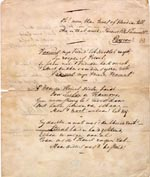
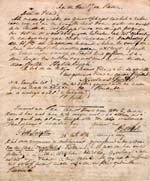
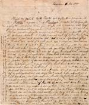
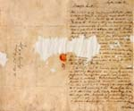

Beets 1903 - 2003
Tentoonstelling van 13 maart tot 11 mei 2003 in de Universiteitsbibliotheek
Samenstelling: C.J. Stiekema en A.Th. Bouwman
Tentoongestelde stukken
10. Brieven aan een jeugdvriend
In 1833 werd Jacobus Philip Kruseman, een Haarlemse jeugdvriend van Beets, onder de wapenen geroepen; het Nederlands-Belgische conflict duurde nog voort. Als Hollandse jager was Kruseman gelegerd in Boxtel en Dussen. Gedurende dat jaar stuurde Beets vanuit Haarlem acht brieven naar diens legerkamp. Deze vroege brieven – in 1999 door een nazaat van Kruseman aan de Bibliotheek van de Maatschappij geschonken – werpen een interessant licht op de maanden direct voorafgaand aan Beets’ studietijd in Leiden.
|  | 10.1. In januari nam Beets afscheid van Ko Kruseman met een onuitgegeven Byroniaans gedicht, waarvan de aanhef luidt: “Vaarwel, mijn Vriend, het Noodlot roept, / Zijn roepen is bevel / En schoon zich ’t vriendenhart verzet / ’t Moet bukken voor diens ijzren wet / Vaarwel, mijn vriend, Vaarwel! […]”. [LTK 2239/2] |
|  | 10.2. Ook Beets moest loten voor de militie. Zijn brief van 23 maart 1833 besluit met een opgelucht postscriptum: “Ik heb deze morgen voor de militieraad gecompareerd en ben aldaar voor een jaar vrijgesteld. Victoria! […]”. [LTK 2239/3] |
|  | 10.3. Ofschoon Nicolaas Beets aanvankelijk in zijn vaders voetstappen zou treden als apotheker, schrijft hij op 6 mei aan Ko dat hij in Leiden theologie mag gaan studeren: “Wensch mij geluk, beste Vriend! Het besluit is genomen: ik zal studeren! En waarin? in de theologie: voorzeker het verhevenste, edelste, doch ook tevens gewichtigste vak […]”. [LTK 2239/3] |
|  | 10.4. De achtste en laatste brief (van 4 november 1833) schrijft Beets aan Kruseman vanuit Leiden. De brief is door muizen aangevreten maar de aanhef is nog goed leesbaar: “Waarde vriend, Daar zit ik nu op de Beestenmarkt te Leyden, sedert 14 dagen ontgroend, en schrijf u mijnen eerste brief als student […]”. [LTK 2239/3] |
| vorige pagina | volgende pagina |